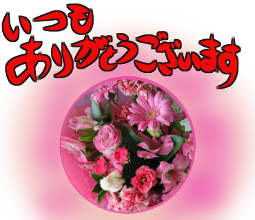
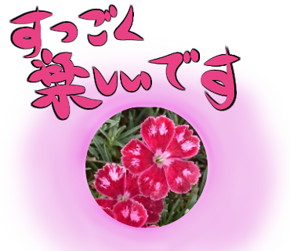
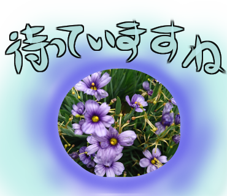
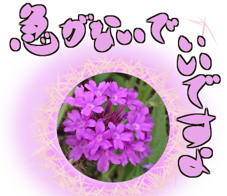
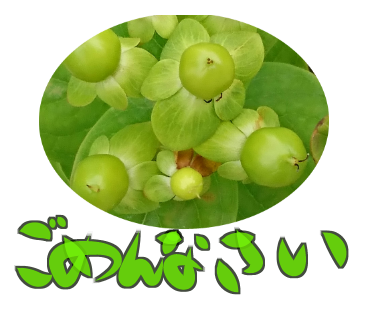

感謝の気持ちを込めて花束を贈るイメージで

今、すっごくたのしいよを表現したかったけど、もう少し花チョイスを考えたほうが良かったかも
この花は退職祝いに贈っていただいたもの。凄く嬉しかった
マンションに引っ越し後、初めて訪ねてきた友人からの頂きもの

姉の庭で咲いていたかわいい花。待ってますって感じ

紫系で落ち着いてねをイメージ
哀しいよを表現。お葬式のかんじになっちゃったかな

グリーンの花でごめんなさいを表現